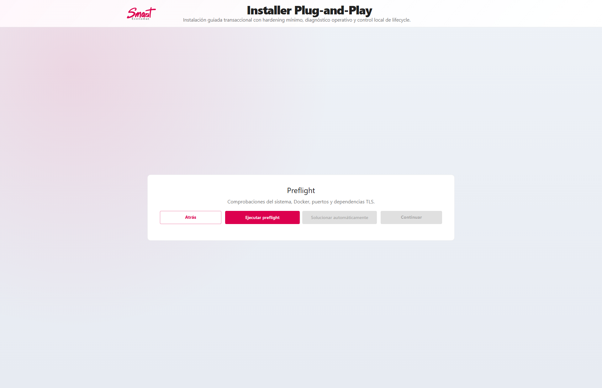
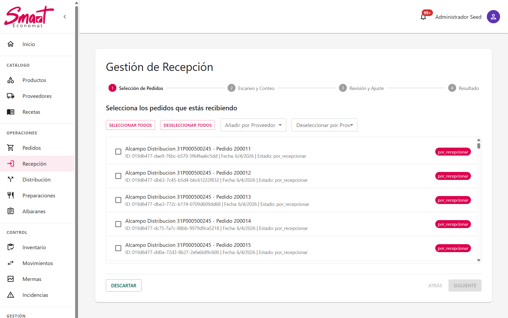
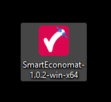
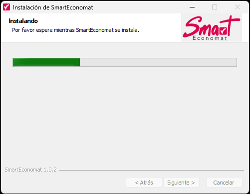
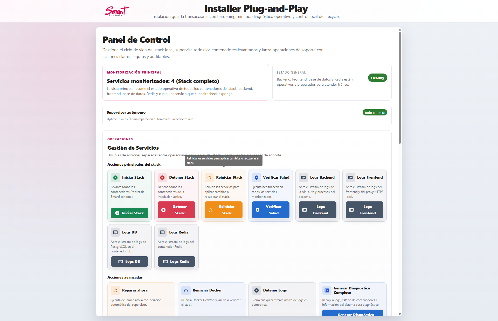
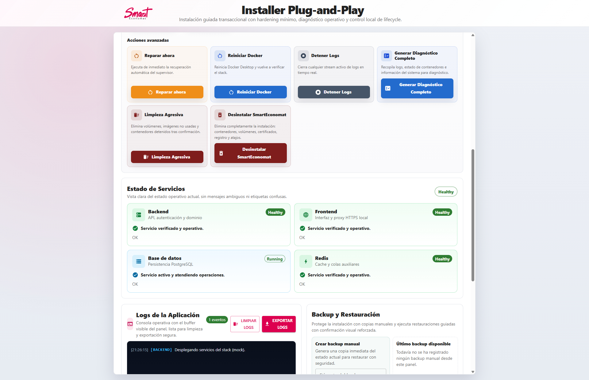
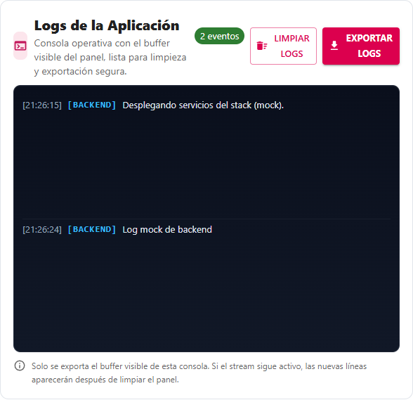
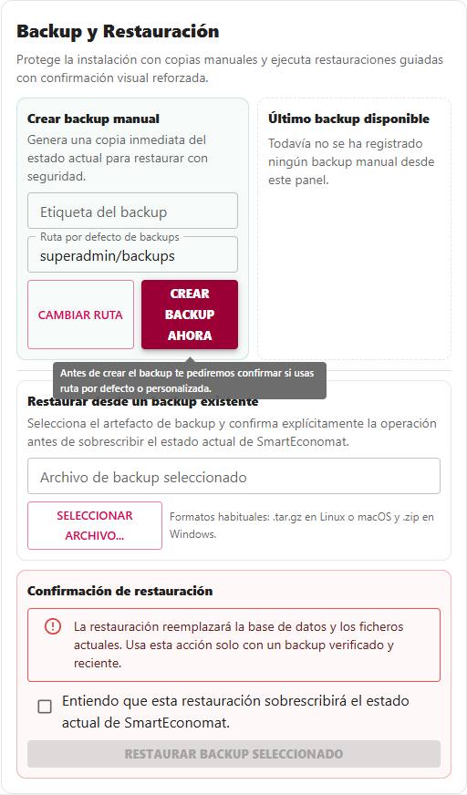
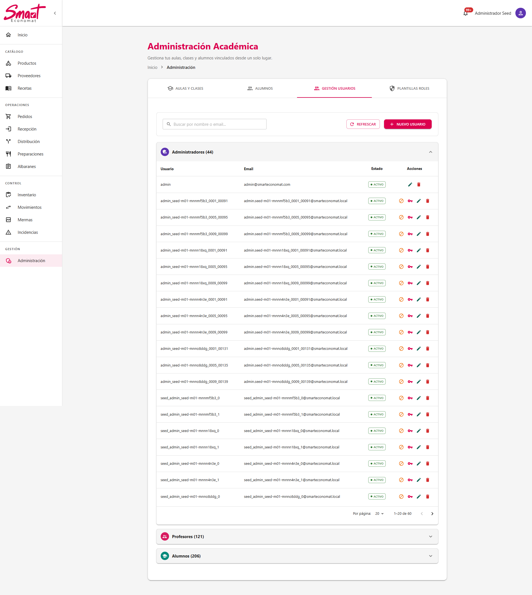

- Ramas enfocadas en una unica responsabilidad funcional.
- Revisiones cruzadas para detectar deuda tecnica temprano.
- Sincronizacion continua con contratos backend como fuente de verdad.
Trabajo Fin de Grado · Defensa oral
SmartEconomat
Contexto inicial: problema, alcance y objetivos
El punto de partida fue un economato con procesos manuales y trazabilidad fragmentada. El objetivo del TFG no era crear pantallas aisladas, sino un flujo digital completo que redujera errores operativos.
Situacion de partida detectada
- Pedidos y recepciones gestionados con documentos y hojas sueltas.
- Control de stock reactivo, con incidencias detectadas tarde.
- Escasa gobernanza de permisos y roles por perfil de usuario.
- Dificultad para auditar que paso, cuando y quien realizo cada accion.
Objetivos definidos al inicio del proyecto
- Centralizar catalogo, compras, recepciones, inventario e incidencias en una unica plataforma.
- Implantar seguridad real con RBAC y validacion en backend por capas.
- Garantizar trazabilidad de datos y estados con reglas de negocio consistentes.
- Construir un flujo de desarrollo repetible (Git, tests, CI/CD) para evolucionar el producto.
Arquitectura y decisiones tecnicas
La arquitectura cliente-servidor mantiene contratos claros: UI y servicios frontend consumen API versionada, mientras backend centraliza validacion, negocio y seguridad.
| Capa | Decision aplicada | Beneficio defendible |
|---|---|---|
| Frontend | React + servicios HTTP centralizados | Evita duplicar reglas de auth, errores y payloads. |
| Backend | NestJS modular + DTO validation | Escalabilidad por dominio y contratos robustos. |
| Datos | PostgreSQL + UUID v7 + soft delete | Trazabilidad y rendimiento de indices por orden temporal. |
| Seguridad | JWT + guards por capas + throttling | Control de acceso consistente y minimizacion de riesgo. |
Recorrido funcional de la aplicacion
Una vez definida la arquitectura, el desarrollo se estructuro por modulos de negocio conectados entre si. Este es el recorrido logico de uso de la aplicacion en operacion real.
1) Catalogo y compras
- Gestion de productos, proveedores y relacion producto-proveedor.
- Creacion de pedidos con lineas y estados trazables.
- Base para controlar costes y disponibilidad antes de recepcionar.
2) Recepciones e incidencias
- Seleccion de pedidos pendientes desde wizard de recepcion.
- Escaneo o conteo por linea con guardado automatico de borrador.
- Envio de recepcion al backend con DTO validado.
- Transaccion unica para recepcion, albaran, stock y movimientos.
- Creacion automatica de incidencia si hay diferencias.
- Actualizacion de estado de pedido y cierre trazable.
flowchart LR
wizardRecepcion[Wizard Recepciones] --> draftSave[Guardado Draft]
draftSave --> submitRecepcion[POST /recepciones]
submitRecepcion --> txService[RecepcionStockService Transaccion]
txService --> inventarioMov[Inventario + Movimiento]
txService --> incidenciaCheck{Diferencias}
incidenciaCheck -->|Si| crearIncidencia[Incidencia + IncidenciaLinea]
incidenciaCheck -->|No| cerrarOk[Recepcion OK]
crearIncidencia --> pedidoEstado[Actualizar Estado Pedido]
cerrarOk --> pedidoEstado
pedidoEstado --> resultadoUI[Resultado en UI]
3) Inventario, produccion y administracion
- Inventario y movimientos conectados con recepciones para datos fiables en tiempo real.
- Modulo de produccion/cocina para recetas, preparaciones y lotes.
- Panel de administracion para supervisar sistema, usuarios y operativa.
Evidencia visual del recorrido funcional

Inicio de flujo guiado
Pantalla de recepciones en operacion Conteo y validacion por linea
Conteo y validacion por linea
 Cierre de proceso con trazabilidad
Cierre de proceso con trazabilidad
Instalador y panel de administracion operativa
SmartEconomat no se limita a la aplicacion web: incorpora un instalador de escritorio para Windows, un asistente guiado de despliegue y un panel de control para operar el stack Docker en produccion o laboratorio.
Instalacion asistida (NSIS + wizard)
El flujo de puesta en marcha parte del ejecutable, solicita elevacion cuando es necesaria y guia al operador por preflight, configuracion, SMTP, despliegue y finalizacion. Esto reduce barreras tecnicas y estandariza instalaciones en entornos no expertos.

Instalador distribuido para Windows (entrada del flujo)
Instalacion guiada y controlada con NSIS Despliegue automatizado del stack con seguimiento visual
Despliegue automatizado del stack con seguimiento visual
Panel de control del instalador
Tras el primer despliegue, el operador puede gestionar servicios, revisar logs, lanzar backups y ejecutar acciones de mantenimiento desde un panel central. Este panel evita tener que usar comandos de Docker manualmente para operaciones rutinarias.

Panel operativo con estado general del entorno
Control visual de servicios del stack
Consulta de logs para diagnostico y soporte
Backups y restauracion para continuidad operativaAdministracion funcional dentro de la aplicacion
En paralelo al panel tecnico del instalador, la propia aplicacion incluye administracion de negocio: usuarios, permisos, catalogo, recepciones e inventario. Esta separacion entre operacion tecnica y operacion funcional mejora gobernanza y mantenibilidad.
 Dashboard administrativo para control funcional diario
Dashboard administrativo para control funcional diario

Gestion de usuarios y ciclo de cuentas RBAC granular desde el gestor de permisos
RBAC granular desde el gestor de permisos
 Recepciones e inventario como nucleo operativo
Recepciones e inventario como nucleo operativo
Proceso de desarrollo: metodologia y workflow Git
El resultado tecnico se apoyo en un proceso de equipo disciplinado. Se trabajo por incrementos funcionales cortos, validando contratos, pruebas y calidad antes de integrar.
Workflow Git aplicado
- Planificacion de tarea y apertura de rama por feature o fix.
- Commits pequenos y trazables, con mensaje claro de intencion tecnica.
- Pull Request con revision funcional y tecnica antes de merge.
- Ejecucion de checks automatizados (lint, tests, build, capturas E2E).
- Merge a rama principal de integracion y despliegue controlado.
Practicas que evitaron regresiones
JwtAuthGuard,RolesGuardyPermisosGuardvalidados en cada iteracion.- Pruebas sobre rutas protegidas y perfiles de usuario.
- Backend como ultima decision de autorizacion (frontend no decide acceso).
flowchart TD
task[Tarea definida] --> branch[Rama feature/fix]
branch --> commits[Commits pequenos]
commits --> pr[Pull Request]
pr --> checks[Lint + Tests + Build]
checks --> review[Revision tecnica]
review --> merge[Merge rama integracion]
merge --> deploy[Deploy controlado]
Calidad tecnica, seguridad y despliegue
Pruebas por capas
| Capa | Estrategia | Objetivo |
|---|---|---|
| Backend | Unit + E2E + qa:gate | Reglas de negocio y contratos estables. |
| Frontend | Vitest + Playwright + rutas protegidas | UX consistente y permisos correctos. |
| Installer | Unit + E2E + capturas automatizadas | Despliegue repetible y verificable. |
Seguridad aplicada en producto
- JWT en cookie httpOnly, validacion por guards y permisos granulares.
- DTOs y validaciones estrictas para proteger contratos y datos de entrada.
- Rate limiting y normalizacion de errores para robustez operativa.
Despliegue real
- Pipeline CI/CD: lint, test, build, empaquetado y despliegue remoto.
- Produccion con Docker Compose (frontend, backend, PostgreSQL, Redis).
- Instalador para reducir friccion en entornos no tecnicos.